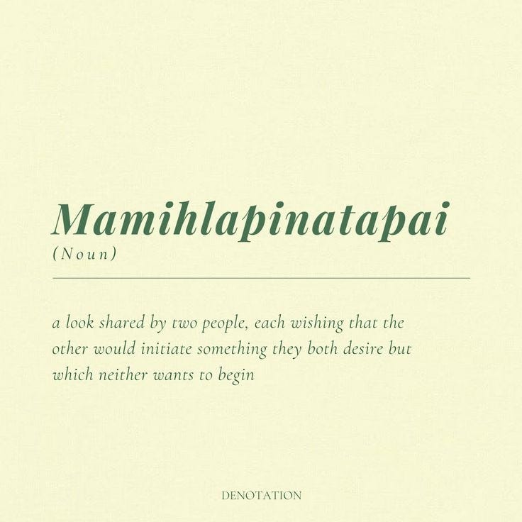

Word of The Week #42.0.0
Okayyyy, die home page sieht jetzt so aus.
Oben gibt es jetzt immer einen random splash text! Es gibt noch nicht so viele im Pool, aber es werden bestimmt immer mehr :D
Ich hab dem Ding jetzt eine Version gegeben.. I guess das ist jetzt Version 2.0 . Mal schauen, ob das Sinn macht.
Neuer look für das Navigations Ding
Und unten ist jetzt ein button, der dich zu einer random page bringt :D
Ist die Homepage gut so??
Well well well, ich habe eine line Koks genommen und den ersten Artikel für dich runter geschrieben :D
Wie diese Website funktioniert
Oh oh oh, was bin ich denn hier wieder am kochen??
Und ich habe ein paar z-index issues gefixt! Mhm, langsam wird es ernst.
Big one!
Also, oben links gibt es jetzt einen tollen button, der die Navigation öffnet! Von da aus kommst du jetzt über all hin auf dieser Website. (Ich hoffe es funktioniert von überall aus, sollte aber eigentlich)
TODOs:
Eine Page, wo du jetzt sehen kannst woran ich gerade so arbeite, sehr cool, wie ich finde.
TODOs
Archive:
Alle kleinen features, die nicht in die Navigation passen sind von hier aus erreichbar. Dachte ich wäre cleaner, als so super viele Dinge in der Leiste..
Archive
Suggestion Box:
Joa, ne.. das kommt noch! Aber ich war bisher noch nicht zufrieden mit meiner Umsetzung, deswegen gibt es das noch nicht..
Neue Page mit dem Wort der Woche!
Ich glaube ich muss mal eine Navigationbar da oben machen.. die Website wird langsam unübersichtlich.
Und maybe mal eine Art pinboard, wo ich mal so kleine Dinge rein schreiben kann?
Suggestion Box für dich?
To-Do list für mich?
So viele Dinge noch zu tun.
Neue Page um die Geschichte von Hank für die Nachwelt zu dokumentieren!
Außerdem gab es ein paar kleine Änderungen
Sorry, nur ein kleines Update, aber mehr ist in der Mache :O
version 2.0.1